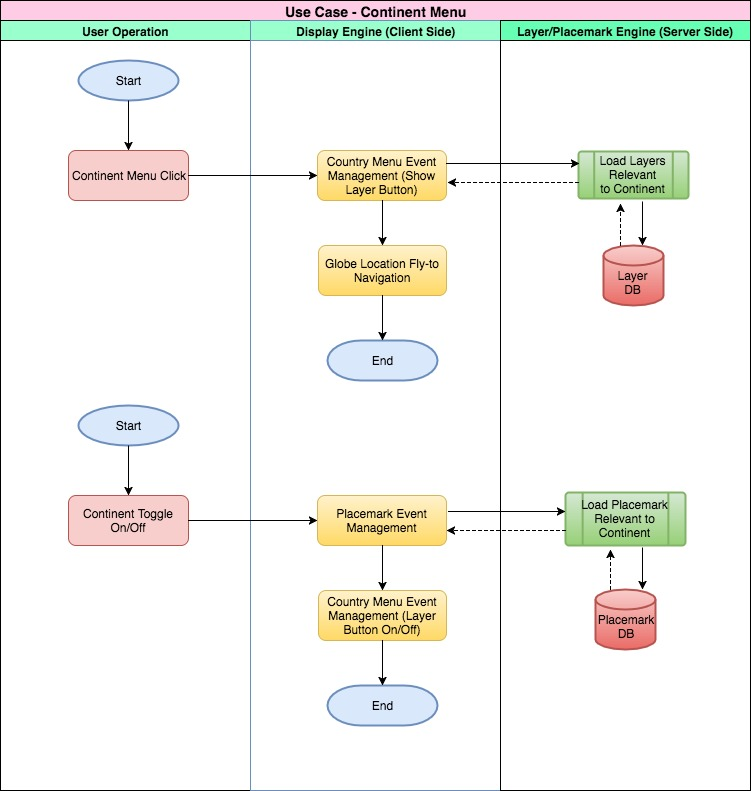
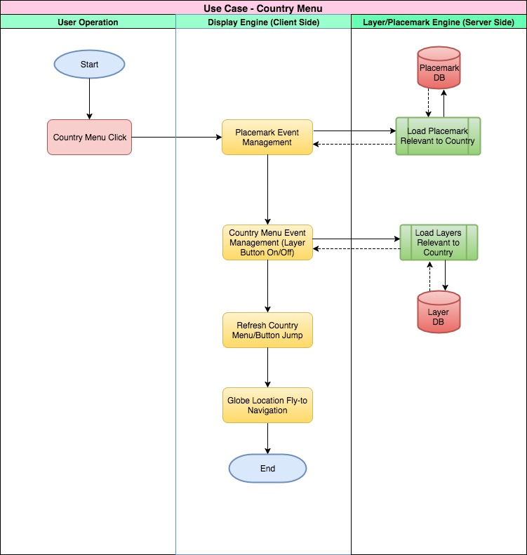
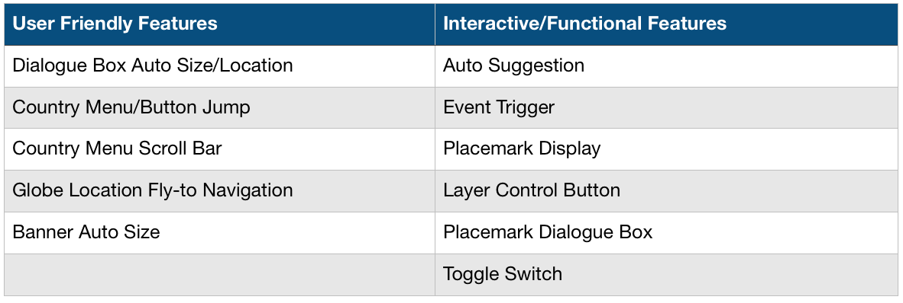

Earth Viewer for the World Heritage Sites
Fei Tian Academy of the Arts, Middletown, New York, USA - A World Bridge Project
Education and Cultural Integrity in NASA World Wind - A World Bridge™ - Trillium Learning
FTAA – A World Bridge students are making a visit to UNESCO World Heritage sites as easy as it is informative. While viewing the Earth from space, all World Heritage sites are visible. Zoom from satellite view to the World Heritage site, and access the culturally rich information. The Evaluation Video below demonstrates all the application’s funcitionalities. Click here to run the application! (*Chrome browser works best).
Additionally, the students carefully analyzed the UNESCO World Heritage site data. Cross-checking with multiple quality assurance/quality control (QA/QC) procedures, they identified and corrected several location errors, where the site is not located where it is supposed to be. Each World Heritage placemark is interactive, including site information, and links to the UNESCO website.
Goal
The FTAA - A World Bridge team believes that understanding, learning about, and protecting cultural heritage is a key foundational element for sustainability of a Smart City and Community. We hope to make this process easily accessible, simple to use, and a teaching tool for all educational institutions and communities around the world. This NASA Europa Challenge - Helsinki 2017 project demonstrates a redesign of the UNESCO World Heritage Sites data, visualized on the NASA World Wind geospatial platform.
Evaluation Video (Click the picture below to play the video)
From the UNESCO World Heritage Sites webpage: "Heritage is our legacy from the past, what we live with today, and what we pass on to future generations. Our cultural and natural heritage are both irreplaceable sources of life and inspiration.
What makes the concept of World Heritage exceptional is its universal application. World Heritage sites belong to all the peoples of the world, irrespective of the territory on which they are located.
The United Nations Educational, Scientific and Cultural Organization (UNESCO) seeks to encourage the identification, protection and preservation of cultural and natural heritage around the world considered to be of outstanding value to humanity. This is embodied in an international treaty called the Convention concerning the Protection of the World Cultural and Natural Heritage , adopted by UNESCO in 1972."
Educational Outreach
This Earth Viewer is designed to raise awareness of international cultural heritage and the critical importance of protecting and maintaining both natural, and manmade objects which hold multiple generations of tradition and information. Any CitySmart - Sustainable Community must treasure, protect and teach this cultural understanding. This application enables easy-to-use access pertinent information for each site, and to navigate in simple yet highly visual geospatial methods, and is available for all community and educational institutions worldwide.
The WHS Earth Viewer is a completely open source application based on NASA-ESA WebWorldWind. Programming code utilized a variety of tools and applications, including Javascript, HTML5, CSS, Python, and server-side programming - all available on the GitHub site.
WHS Error and Correction - QA/QC Report
FTAA A World Bridge students scrutinized UNESCO WHS website data and discovered many geolocation errors. The students then designed a Quality Assurance/Quality Control system to identify the absolute location of UNESCO WHS place marks, followed by multiple tests on multiple latitude-longitude and geolocation websites to ensure accuracy of error identification, and corrections suggested by the students. Students then composed a WHS Error and Correction Report which consists of four sections per error:
1. Quick Summary of the WHS Site
2. Presentation of WHS website error.
3. Presentation of A World Bridge - Earth Viewer Correction
4. Comments with explanation of the error.
Click here for the WHS Error Report.
Content and Data Analysis Process
This document represents the process students used for data gathering and error checking. This tutorial-format process may be utilized by other academic institutions to replicate the students’ process. Click HERE to download the document (PDF).
WHS Earth Viewer Data Workflow
The data workflow for this project is outlined in the graphic below. This link takes you to a separate page which describes the Server Side and Technical Documentation/Description. The process includes:
1. Initial data collection and information analysis from the WHS website
2. Verification and latitude-longitude processing for each WHS site
3. Output data and/or error to data container
4. Server-side data storage and WebWorldWind layer foundation
5. Data visualization of WWW on the application, GUI functionality and client calls.
Click on the diagram below to download the graphic.

WHS Earth Viewer Data Workflow Use Cases
Working The following workflow diagrams illustrate the programming and workflow logic for possible interactions between clients and the application. Click on any of the graphics to download.
Use Case: Continent Use Case: Country
{kind=link}
{kind=link}
Use Case: Search Use Case: Placemark
{kind=link}
{kind=link}
Features Overview

Dialogue Box Auto Size/Location
Auto Suggestion
Country Menu/Button Jump
Event Trigger
Country Menu Scroll Bar
Placemark Display
Globe Location Fly-to Navigation
Layer Control Button
Banner Auto Size
Placemark Dialogue Box
Toggle Switch
Evaluation Video Documentation - Slides, Screenshots and Script
The Evaluation video above may also be viewed as screenshots from the main slides, along with the script from the narration.
Meet the Team
Mentor: Mr. Anson Zhao
Students and Supporting Mentor: Olivia Zhang, Jadelin Nguyen, Trueman Wu, Julia L. Zhu, Sacia Ashe, Zedong Ding, Suming Zhang, Huaqi Zhang, Minghui Zhang, Kiae Shin, Daniel Johnson and Professor Ron Fortunato. Working collaboratively with A World Bridge students from Alaska, the development of this application is open source, and based on NASA WebWorldWind.
Links Summary
Click link above to run the application. (Chrome browser works best).
Click the link above to view the 3-minute demonstration video of the WHS Earth Viewer functions.
WHS Earth Viewer Sourcecode (Github)
The link above allows download of source code for the WHS Earth Viewer WebWorldWind app.
Server-Side and Technical Documentation/Description
Click HERE to view a separate page on the WHS Earth Viewer technical documentation.
WHS Error and Correction - QA/QC Report
Link downloads the full WHS Error and Correction - QA/QC Report.